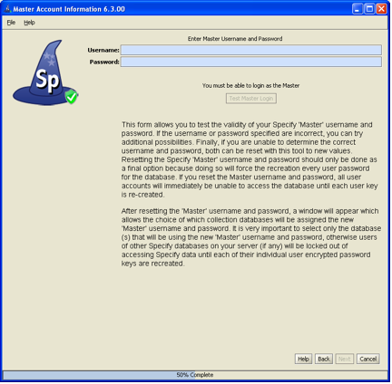
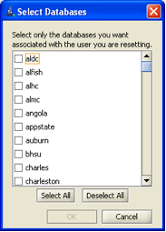
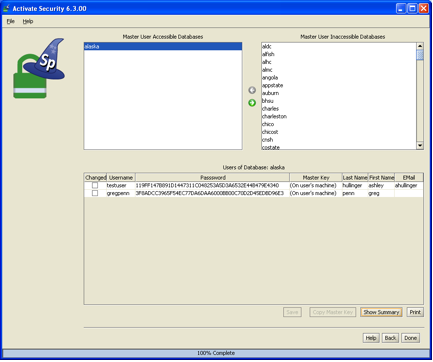

Specify DB Security Wizard |
New in Specify 6.3! If you are having difficulty logging into any of its utilities your first check should be to verify the username and password that Specify is using. The Security Wizard provides a quick and easy mechanism to check these. It also provides a mechanism to reset the Master username and password. If you have forgotten the Master username and password the Security Wizard will allow you to reset them.
Types of Specify credentials include:
For more information regarding these login types please refer to the Specify Login help page.
The Security Wizard also provides a summary of the databases and users that utilize the current Master credentials as well as a list of all Specify databases in your current database management system (MySQL).
The Security Wizard is a separate application that ships with Specify. It is located in the Specify application directory, in the bin subdirectory, which stores the executable files for Specify. Double click SpecifyDBSecurityWizard to launch the tool.
Test IT Username and Password
The initial screen verifies the IT username and password. The IT username and password refer to the credentials required to login into the MySQL database manager. It has full administrator privileges within the MySQL database manager.
- Type in the IT Username and Password in the appropriate boxes.
- Type in the Host Name. The host name is the name of the computer that is running MySQL. This is either an IP Address or name of the computer that is recognized by the server. When running MySQL on your local machine this is almost always 'localhost' or '127.0.0.1'.
- Click on the Test IT Login button.
Correct IT Credentials
If your IT credentials are correct a message above the button will alert you that your Login test was successful.
Incorrect IT Credentials
If your IT credentials are incorrect a red message will alert you that your Login test was NOT successful. You may try again by typing in different credentials and clicking the Test IT Login button.
The security wizard requires correct IT credentials in order to progress. If you are unable to identify your correct IT credentials you may go no further in the Security Wizard tool. There are also Specify features that require the IT credentials, including creating a new Discipline or Division and using the Backup and Restore tool.
- Click the Next button to proceed in the security wizard.

Test Master Username and Password
This screen verifies the Master username and password. The Master credentials were created when the Specify Setup Wizard was run to create the Specify database or created by an IT administrator if a database was created from within MySQL rather than through the Specify Setup Wizard.
- Type in the Master credentials.
- Click the Test Master Login button.
Correct Master Credentials
If the Master credentials are correct a message will alert you that your Login test was successful.
Incorrect Master Credentials
If the Master credentials are incorrect a message will alert you that your Login test was NOT successful.You may try again by typing in a different username and password and clicking the Test Master Login button.
A new button will appear. If you unsuccessful and wish to recreate the Master crecentials you can use the Reset your Master Username and Password button.
Warning: If you reset the Master username and password EVERY Master Key that was configured using the old Master credentials will need to be reconfigured. That means that every user for the database(s) will require a new Master Key to be reconfigured and sent to them. Users will be required to type in the new Master Key the next time they login to the Specify database!
Reset the Master Username and Password
Click the Reset your Master Username and Password button to reset the Master credentials. A dialog will appear listing ALL the Specify databases available. It is important to note that this is a list of ALL the databases.

Specify Database List
1) Choose the database(s) that will be reset to use the new Master username and password.
Now you will need to reset the Master credentials.
Reset the Master using the Username and Password fields
2) Simply type the new Master username and password into the second screen.3) Click the Test Master Login button.
- Click the Next button to continue in the Security Wizard.

Specify Databases and Users
The new screen displays three panels of information:
Accessible Databases is a list of all the databases that are accessible using the current Master username and password.
Select a database from the list to open a list of users for the database in the bottom panel (3).
Select a database from the list and click the
to remove it from the list of Accessible Databases and into the Inaccessible Databases list.
Note: The database(s) listed in the Accessible Databases list when the screen originally opens can not be removed from the list.
Note: The Specify team does not recommend that a database be moved from the Accessible Databases panel (1) into the Inaccessible Databases panel (2). Databases moved in this way will not have their Master username and password and any attempt to login from Specify will fail until the Master is reset. Reset the master by opening the Specify DB Security Wizard and follow the steps in the Reset the Master Username and Password section above.
Non-Accessible Databases gives a list of Specify databases that are not accessible using the current Master username and password.
Select a database from the list and click on the
(move) button to replace the existing Master user for the database and replace it with the current Master user.
Warning: Moving a database from the Non-Accessible Databases panel to the Accessible Databases panel will reset the Master username and password for the database and EVERY user of the database will need to have a new Master Key reconfigured and sent to them. Users will be required to type in the new Master Key the next time they login to the Specify database!
Users of Current Database' (the name of the current database will be the label for this panel) displays the users that have access to the currently selected database (in panel 1). If you have added any databases to panel 1 you will need to reconfigure the Master Key for each of the users before they can gain access to Specify. Or, if the Master credentials were reset for a database in the previous screen all the users for that database will need to have their Master Key reconfigured. This task can be completed using panel 3.
Note: The Master Key can also be reconfigured from within the security tool in Specify as well during the login process. The user must know the Master username and password to reconfigure their Master Key during the login process.
The the Master credentials will be reset for any databases that are moved from the Inaccessible Databases panel (2) into the Accessible Databases panel (1). The users that access the database will need to have a new Master Key configured and sent to them so they may login to Specify.
Be sure that the correct database is selected in Panel 1.
Click on the desired username to select the user.
Select all the text in the Password text box and delete it. At this time the column labeled 'Master Key' indicates that the Master Key is on the user's machine. Master key information is stored on the local machine and there is no way for this tool to retrieve this information and show it here; therefore, the Master Key must be reconfigured.
Type in a new password and press the 'tab' key.
Click the Copy Master Key button at the bottom of this screen to copy the master key into the computers clipboard. You can then paste this into an email and send it to the user. The user will NOT be able to login without this new master key.
Click the Show Summary button to show a summary of all the users in the currently selected database as well as their user information.
Click the Print button to print a summary of all the users in the currently selected database as well as their user information.